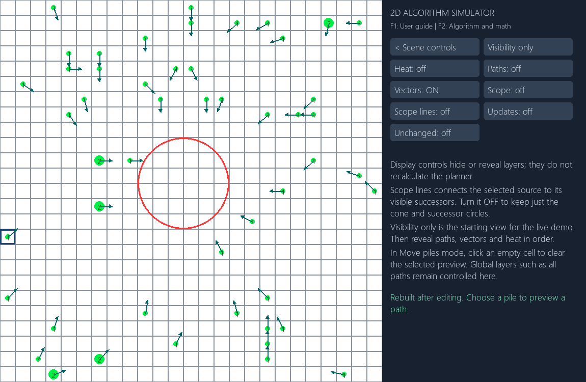

55 objects; target in the center

Scheduled at minutes 11–17 of the 45-minute talk. Later work starts at minute 22.
Recommended scene: the original 55-object layout, with one pinned target action. It shows a nontrivial field and a small affected subset. Keep the 16-object corridor as an explanatory backup, not a second live demo.
| Demo clock | Step | Action and explanation |
|---|---|---|
| 0:00–0:40 | Start the prepared scene | Use 2D Algorithm Simulator.exe before the talk. The selected pile is (0,15): the far-left column, row 15 from the top. State that this is the old 55-object layout, running the current algorithm. |
| 0:40–1:30 | Explain visibility | Display panel: Scope selected, Scope lines off. Point to cone/range and circled successors. Briefly enable Scope lines if needed, then disable them. Do not change parameters during the main demo. |
| 1:30–2:20 | Reveal the target route | Scope off; Paths selected. Explain the route gathering 4 new objects. Its saved cell sequence is [[0, 15], [6, 10], [8, 10], [9, 10]]. Click an empty cell once to clear the preview, then reselect (0,15). |
| 2:20–3:10 | Reveal direction and heat | Paths off; Vectors on briefly. Then Vectors off, Heat on, Paths selected. Explain that heat scores a transport opportunity, not material already in a cell. The palette auto-rescales per state. |
| 3:10–4:40 | Execute and show the selective update | Return to Scene controls; Target mode (T); press Enter exactly once. Open Display: Heat off, Paths off, Scope off, Updates ON. Read the verification message: 8 target searches / 47 fresh. Matches fresh calculation. Point to E/D/R; unchanged sources have no colored borders. Green circles are still piles. |
| 4:40–5:20 | State what is reused | Target searches rerun for the dependency closure; other target paths are retained. Propagated values, heat and staging routes still rebuild globally. Full recalculation also runs here for verification, so this is not a timing benchmark. |
| 5:20–6:00 | Return to the wider thesis | Leave the verified result on screen, then switch back to slides: a useful 2D opportunity still needs rover approach, alignment, tracking, collision avoidance and action selection. No further live actions in the main talk. |
Reopen the dedicated launcher to restore the exact initial scene. Rehearse on the projector: text size, mouse selection at the left edge, and switching back to slides. Do not use Load latest for the presentation. Save experimentation separately.
Hard stop: leave the simulator by talk minute 17. If you fall behind, skip the vector layer. If startup/verification fails, do not debug live: show the screenshots below and state they are saved outputs from the verified run. No measured speedup claim.
Spillage and hyperparameter changes are useful for questions after the talk. They are excluded from the main six minutes to protect the later work. The slides still explain the estimator and its replaceability.


